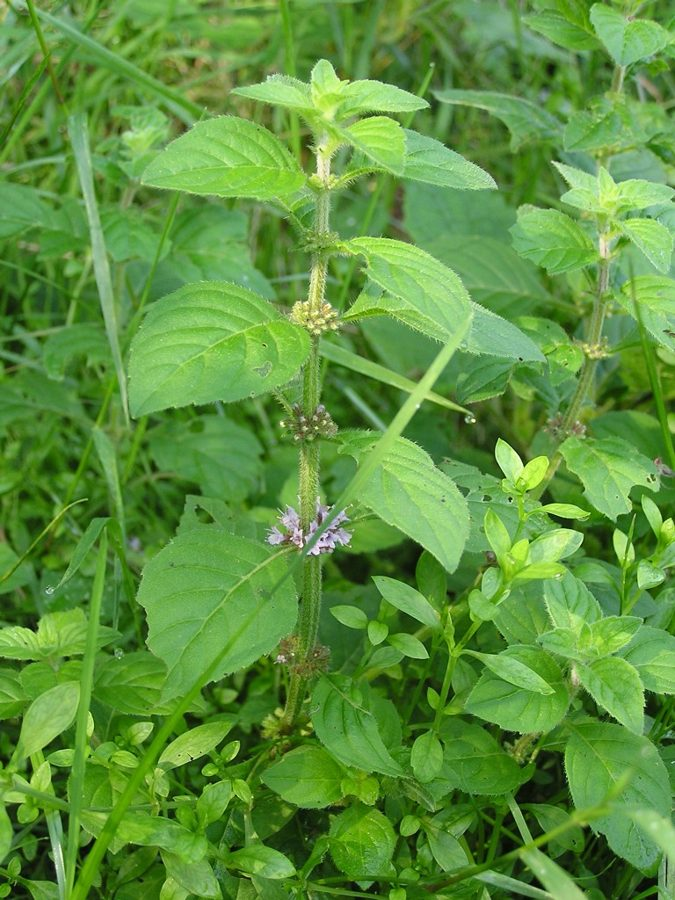

पुदीनाMint
Mentha arvensis · Lamiaceae · FLR-0184

- Scientific name
- Mentha arvensis L.
- Family
- Lamiaceae
- Hindi
- पुदीना
- Local names
- pudina, pudhina, podina, pudeena, mint
- Status here
- cultivated
- IUCN
- not evaluated
- Review
- audited and independently read
When to look कब देखें
Present all year.
Uses and possibilities उपयोग और संभावनाएँ
“Traditional medicine” means a documented traditional use, not a claim that it works. Nothing on this page is medical advice.
Drawn from the documented uses in the profile below, where each is labelled traditional, current or a research lead. All uses →
पुदीना / Mint
Mentha arvensis L. — Lamiaceae
पुदीना — हरा, सुगंधित पौधा जो हर गाँव के घर में है, चाय में, चटनी में, दवा में। पुरानी ज़मानें से भारत में होता है। पत्तियाँ तोड़ो तो हाथ में तीव्र खुशबू रह जाती है। मुँह की ताज़गी से लेकर पेट की बीमारी तक सब के लिए आयुर्वेद में जाना जाता है।
Quick Identification त्वरित पहचान
| Feature | Description |
|---|---|
| Habit | Herbaceous perennial or annual, 30–60 cm, much-branched, erect or spreading |
| Stem | Quadrangular (square in cross-section), green, hairy, often purplish at nodes |
| Leaves | Opposite, lanceolate to oblong, 2–5 cm, acute, toothed margin, aromatic when crushed |
| Flowers | Small, lavender, pink or white, in dense axillary whorls (rings around the stem); very aromatic |
| Odour | Strongly minty, characteristic menthol scent when crushed — unmistakable |
| The key test | Crush a leaf: intensely fresh mint smell, cooling sensation on lips |
Field tip: A sprawling or erect herb with square stems, opposite toothed leaves, and dense whorls of small flowers. The unmistakable mint odour is diagnostic. Common in gardens, field margins and ditches, and along roadsides.
हिंदी — कैसे पहचानें: चौकोर तने, आमने-सामने दाँतों वाली पत्तियाँ, छोटे बैंगनी-गुलाबी फूल, तीव्र मिन्ट खुशबू। पत्ती मसलिए तो ठंडापन और खुशबू।
Morphology आकारिकी
Biometrics (Indian cultivated populations):
| Measurement | Range |
|---|---|
| Height | 30–60 cm |
| Leaf length | 2–5 cm |
| Leaf width | 1–2 cm |
| Flower head length | 1–3 cm |
| Inflorescence density | Flowers densely packed in axillary whorls |
Stem: Quadrangular (square in cross-section), slightly hairy, green becoming purplish at nodes and in older growth; the square stem is characteristic of the Lamiaceae family.
Leaves: Simple, opposite, lanceolate to oblong-lanceolate, sessile or nearly so, 2–5 cm long, acute or acuminate, margin crenate to serrate (toothed), both surfaces hairy, strongly aromatic. Oil glands are visible in the leaf tissue under magnification.
Flowers: Small, 4–6 mm, zygomorphic, with a 4-lobed calyx and a 2-lipped corolla. Lavender, pink or white; stamens 4, exserted. Arranged in dense axillary verticillasters (whorls). Flowering period July–December in eastern UP.
Essential oil: The leaves contain menthol (40–60%), menthone (10–30%), and other volatile compounds (cineol, limonene); this is the source of the characteristic odour and cooling sensation.
हिंदी: तने चौकोर, पत्तियाँ खुशबूदार, तेल की ग्रंथियों से भरी। फूल छोटे, बैंगनी-गुलाबी, घने समूह में। मेंथॉल का स्रोत।
Behaviour & Ecology व्यवहार और पारिस्थितिकता
A plant of semi-wet ground, field margins, ditches and cultivated land. It thrives in moist, fertile soil and full sun. The plant spreads by runners (stolons) and by seed. In cultivation, it is maintained vegetatively from cuttings or root divisions — a single plant rooted in water will produce dozens of cuttings.
The flowers are attractive to bees, butterflies, particularly the common grass blues and small fritillaries. The aromatic leaves are unattractive to most herbivores, though some grasshoppers and leaf beetles feed on it. The plant does not host any major pests in the region.
In natural wetlands it can form colonies that exclude other vegetation, but it is not aggressive in the way of truly invasive species. It is easily controlled by cutting or by drying out the ground.
हिंदी: गीली, उपजाऊ जमीन पर। भागते हुए तने से फैलता है। मधुमक्खियाँ और तितलियाँ आती हैं। खुशबू से कीड़े दूर रहते हैं।
Life Cycle / Phenology जीवन चक्र
| Month / season | Event |
|---|---|
| January–May | Slow growth in dry season; survives if water is available |
| June–July | Rapid growth following monsoon onset; new shoots from stolons |
| July–December | Flowering and seed production; most vigorous phase |
| November–February | Mature plants flowering continues; reduced growth in cold |
| January–May | Some frost damage in severe winter; recovery from stolons |
Reproduces vegetatively (by runners) and by seed. Annual or perennial depending on climate; in eastern UP, typically perennial.
हिंदी: जून-जुलाई में तेज़ी से बढ़ता है। जुलाई-दिसंबर फूल और बीज। सर्दी में भी फूल। जड़ें बचीं तो वसंत में फिर निकलता है।
Associated Species / Interactions संबंधित प्रजातियाँ
- Cultivated companions: Often grown with Holy Basil, Coriander, Fenugreek in kitchen gardens
- Field margins: Doob Grass, Common Duckweed, other wetland herbs
- Fauna: Lesser Grass Blue, common copper butterfly, honeybees, hoverflies
Pests and Diseases कीट और रोग
- Leaf-eating grasshoppers and beetles in some seasons (not a serious threat)
- Rust fungi (Puccinia menthae) in very wet conditions; rarely causes damage
- The essential oils provide strong natural resistance to most pests
Agricultural / Human Relevance कृषि प्रासंगिकता
Documented traditional use (not medical advice):
- Culinary. Fresh leaves are used in chutneys, salads, beverages and as a garnish. Dried leaves for tea. The flavour combines with lime juice, raw onion and green chillies in a refreshing raita (yoghurt salad). Mint is a staple of Indian hospitality.
- Medicinal. In traditional Ayurvedic and home practice, a decoction of fresh leaves or a leaf infusion (mint tea) is taken for indigestion, bloating and nausea. In Unani medicine similarly for digestion and to cool the stomach. The practice is documented in classical texts (Bhava Prakasha, Chakra Datta) and in modern ethnobotanical surveys across India. The essential oil is considered cooling and carminative (reducing gas).
- External use. Crushed leaves applied to insect bites and stings to cool and soothe. The menthol content provides a genuine analgesic and anti-inflammatory effect recognised in modern pharmacology.
- Cosmetic. Leaf infusions used in homemade preparations for skin tone and freshness.
Today. A household plant, cultivated on a small scale in nearly every village and most home gardens. Commercially grown for export of dried mint, essential oil and herbal products. A minor but significant livelihood herb.
Research direction (a lead, not a result). Menthol extraction from Mentha arvensis for the global flavour and pharmaceutical industry is an established technology. Local-scale processing of dried mint into value-added products (packaged dried leaves, mint powder) is an underdeveloped opportunity in eastern UP.
हिंदी: चाय, चटनी, पराठे में। पेट की बीमारी में पानी में भिगोकर पीते हैं। काटने का जहर दूर करने के लिए। घर में कम से कम एक पौधा हो। खेती में छोटा लेकिन कमाई का जरिया।
Expected Locally स्थानीय रूप से अपेक्षित
Not a field record. Written from published accounts for eastern Uttar Pradesh. No confirmed local sighting yet — if you have seen it, that is what the atlas needs.
अभी तक स्थानीय पुष्टि नहीं। यह विवरण प्रकाशित स्रोतों से है, किसी अवलोकन से नहीं।
To be expected in gardens and cultivated fields throughout Basti district and eastern UP. The plant is also naturalized on roadsides, field margins and near habitations. A specimen with flowers is easily identified and would be valuable for documenting local cultivation and use patterns.
Distribution वितरण
Global range: Temperate and subtropical Asia; centre of diversity in the Indian subcontinent.
In India: Widespread across the country, from sea level to 2,000 m; both wild in wetlands and widely cultivated.
In Uttar Pradesh: Very common, especially in the eastern rice belt and in home gardens throughout.
In Basti district / eastern UP: Expected in nearly every village; very commonly cultivated; likely the most accessible medicinal herb for most households.
Research Questions शोध प्रश्न
Anyone can investigate these | कोई भी इन प्रश्नों की जाँच कर सकता है
- How is pudina cultivated in your area, and what is the yield from one plant? / आपके इलाके में पुदीना कैसे उगाया जाता है? — Interview growers; measure annual leaf harvest.
- Which insects visit the flowers, and which do the bees prefer — mint or nearby flowers? — Watch for 30 minutes in July–September.
- Can mint leaves be dried and stored without losing their medicinal properties? — Dry some, store in a jar, and compare freshness after 3 and 6 months.
- What traditional recipes use mint as a main ingredient in your village? / आपके गाँव में पुदीने का मुख्य इस्तेमाल क्या है? — Document recipes; photograph dishes.
- Does the menthol content vary between plants grown in wet vs. dry conditions? — A technical question for laboratory analysis.
Similar Species मिलती-जुलती प्रजातियाँ
| Species | How to tell apart | हिंदी |
|---|---|---|
| Spearmint (Mentha spicata) | Similar but softer, less peppery flavour; sometimes grown in gardens | कम तीव्र खुशबू |
| Holy Basil (Ocimum sanctum) | Broader leaves, different flower arrangement; purple or green form; sacred plant | पत्तियाँ बड़ी, पवित्र पौधा |
| Basil (Ocimum basilicum) | Broader leaves, different odour (anise-like), often cultivated together with mint | अलग खुशबू, बड़ी पत्तियाँ |
Field rule: Square stem, opposite toothed leaves, dense whorls of small flowers, and intense fresh mint odour when crushed = pudina.
Taxonomy & Classification वर्गीकरण
Original description. Described by Linnaeus in Species Plantarum (1753) as Mentha arvensis L. — literally "mint of the fields". Type locality: Europe.
Subspecies. Mentha arvensis L. subsp. arvensis is the Asian cultivated form; several other subspecies are recognised in different regions. The Indian form is sometimes called M. arvensis var. piperascens or M. arvensis var. indica but is now considered part of the main species.
Family and order placement. Lamiaceae (mint family), order Lamiales. A large family of aromatic herbs; the characteristic square stems and opposite leaves are diagnostic.
Phylogenetic notes. Mentha is an extremely variable and hybridogenic genus; many named "species" are now recognised as hybrids or cultivars. M. arvensis sensu lato is paraphyletic with respect to other taxa. However, the cultivated form grown in India is stably maintained and clearly distinct from European wild Mentha.
IUCN status rationale. Not evaluated. A widespread, abundant, and domesticated species; no conservation concerns.
Photo Gallery फोटो गैलरी
Photos needed आवश्यक फोटो
- [ ] Plant in home garden (घर के बगीचे में)
- [ ] Flowering stem showing flower whorls (फूलों की पंक्ति)
- [ ] Close-up of leaf showing texture and oils (पत्ती - बढ़ाई में)
- [ ] Leaves being harvested or dried (सूखाई जा रहा हो)
No photos yet — add field photos to media/species/pudina/ and run node scripts/sync_photos.js.
References संदर्भ
- Linnaeus, C. (1753). Species Plantarum, vol. 2. Stockholm.
- Hooker, J.D. (1885). The Flora of British India, vol. 4. Reeve, London.
- Kirtikar, K.R. & Basu, B.D. (1935). Indian Medicinal Plants, 2nd ed., vol. 3. Lalit Mohan Basu, Allahabad.
- Chopra, R.N., Nayar, S.L. & Chopra, I.C. (1956). Glossary of Indian Medicinal Plants. CSIR, New Delhi.
- Grover, J.K., Yadav, S. & Vats, V. (2002). Medicinal plants of India with anti-diabetic potential. Journal of Ethnopharmacology 81(1): 81–100.
- Lawrence, B.M. (2007). Mint: The Genus Mentha. Taylor & Francis, London.
- GBIF Occurrence Data — Mentha arvensis, India (2026).
Source file: species/flora/medicinal/pudina.md